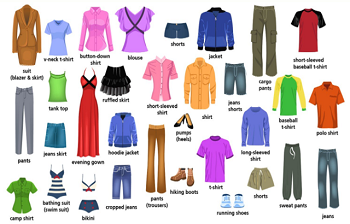
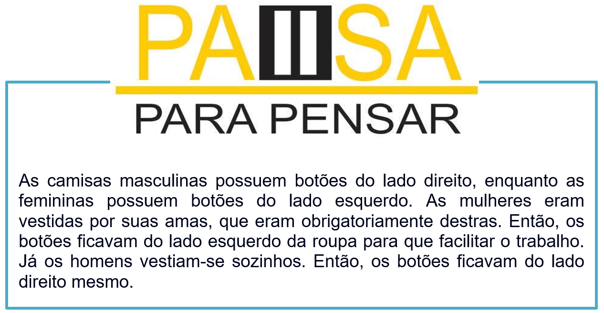

Capítulo 4: Textile and Clothes – Têxtil e Vestuário
Textiles
Textiles are made from many materials, with four main sources: animal (wool, silk), plant (cotton, flax, jute, bamboo), mineral (asbestos, glass fibre), and synthetic (nylon, polyester, acrylic, rayon). The first three are natural. In the 20th century, they were supplemented by artificial fibres made from petroleum.
No texto base, temos informações sobre a origem dos tecidos. Muitos são de origem natural e animal. Vamos conhecer os materiais das fibras. Observe a tradução.
Têxteis
Os têxteis são feitos de muitos materiais, com quatro fontes principais: animal (lã, seda), planta (algodão, linho, juta, bambu), mineral (amianto, fibra de vidro) e sintético (nylon, poliéster, acrílico, rayon). Os três primeiros são naturais. No século 20, eles foram suplementados por fibras artificiais feitas de petróleo.
Contextualizando – tipos de tecidos e profissões relacionadas
Existem cinco tipos básicos de tecido ou pano: seda (silk), algodão (cotton), linho (linen), lã (wool) e lã penteada (worsted). Todos os outros tecidos são derivados deles.
Angora – (tecido fabricado com pelo de coelho Angorá)
Satin – (seda densamente tecida com superfície brilhante)
Baft – (pano barato de algodão grosso)
Baldachin – (material bordado tecido com seda e fio de ouro)
Batiste – (tecido leve, liso e denso de algodão ou linho)
Corduroy – (tecido de algodão grosso com reforço aveludado)
Crinoline – (tecido rígido feito com crina de cavalo e fio de algodão ou linho)
Damask – (tecido com padrão visível em ambos os lados)
Denim – (tecido resistente de sarja de algodão, normalmente azul, usado em jeans, macacões e outras roupas)
Dungarees – (calças feitas com denim azul)
Flannel – (tecido macio tipicamente feito com lã ou algodão, ligeiramente polido e reforçado)
Gabardine – (tecido de sarja liso e durável, tipicamente fabricado com lã penteada ou algodão)
Jacquard – (tecido fabricado em tear equipado com jacquard, com intrincado padrão diversificado)
Jersey – (tecido fino e macio de malha)
Lustring – (tecido de seda brilhante ou tecido de cetim similar)
Mackintosh – (tecido impermeabilizado com borracha)
Mohair – (fio ou tecido fabricado com pelo de cabra Angorá, normalmente misturado com lã)
Moleskin – (tecido de algodão grosso e forte com superfície raspada)
Muslin – (pano de algodão leve com tecelagem simples)
Organza – (tecido fino, rígido e transparente feito de seda ou fio sintético)
Sateen – (tecido de algodão trançado como cetim com superfície brilhante)
Tweed – (tecido de lã com superfície áspera, normalmente com cores misturadas)
Velvet – (tecio de seda, algodão ou nylon com fio curto espesso de um lado)
Venise lace – (renda com padrão complexo)
Chiffon – (tecido leve e puro geralmente feito com seda ou nylon)
Profissões da área de costura em inglês
Na imagem a baixo temos uma cartela de cores e suas nomenclaturas em inglês
Seamstress
Dressmaker
Tailor
Milliner
Draper
Corsetier
Glover
Hatter
Embroider
Leatherworker
Shoemaker
Taxidermist
As estampas são detalhes bem importantes na indústria têxtil. Observe as variações
Para saber mais sobre vocabulário de peças de roupas, visite o link e assista ao vídeo, divirta-se e aumente seus conhecimentos


Reconstruindo conhecimento – Plural dos substantivos contáveis e incontáveis
Substantivos contáveis e incontáveis
É importante distinguir entre substantivos contáveis e incontáveis em inglês, pois eles implicam o uso de diferentes determinantes e verbos.
Substantivos Contáveis
Os substantivos contáveis são utilizados com aquilo que podemos contar através de números. Eles possuem formas no singular e no plural. A forma no singular pode usar os determinantes "a" ou "an". Para saber a quantidade de um substantivo contável, utiliza-se "How many?" combinado ao plural do substantivo contável.
Exemplos
She has three dogs. > Ela tem três cachorros.
Substantivos Incontáveis
Os substantivos incontáveis são utilizados com aquilo que não podemos contar através de números. Eles podem identificar ideias ou qualidades abstratas e objetos físicos muito pequenos ou amorfos para ser contados (líquidos, substâncias em pó, gases, etc.). Os substantivos incontáveis são utilizados com um verbo no singular. Normalmente, eles não possuem forma no plural.
Exemplos:
Tea – chá
Sugar – açúcar
Water – água
Air – ar
Rice – arroz
Knowledge – conhecimento
Beauty – beleza
Anger – zangado
Fear - medo
Love - amor
Money - dinheiro
Research - pesquisa
Safety - segurança
Evidence – evidencia
Expressões de quantidade
Não podemos utilizar a/an com esses substantivos. Para indicar a quantidade de um substantivo incontável, utilize uma palavra ou expressão como some, a lot of, much, a bit of, a great deal of , ou unidades de medida exatas como a cup of, a bag of, 1kg of, 1L of, a handful of, a pinch of, an hour of, a day of. Se você quiser saber a quantidade de um substantivo incontável, utilize "How much?"
Aplicando ao nosso vocabulário
There are some clothes in my wardrobe. > Tem algumas roupas no armário.
That blouse is pink. > Aquela blusa é azul.
The paints are old. > As calças estão velhas.
O que aprendi
• Nesta unidade aprendemos o vocabulário do setor têxtil;
• Vimos as expressões usadas com as roupas;
• Aprendemos a diferenciar os tipos de tecidos e estampas;
• Na parte gramatical estudamos o plural dos substantivos contáveis e incontáveis.
Praticando
Observe a imagem, leia as informações e diga o uso da peça.
Evening gown: a formal dress usually worn in the evening for special occasions.
Answer:_______________________________
Leia as informações e diga o fabric (tecido) usado na produção e o como a peça é utilizada.
Gym shorts: cotton shorts that are often worn by students in athletics class at school. Answer:_______________________________
Observe a imagem, conte as peças de roupas e escreva em inglês pluralizando se necessário
One hat – um chapéu
____________________
____________________
____________________
____________________
____________________